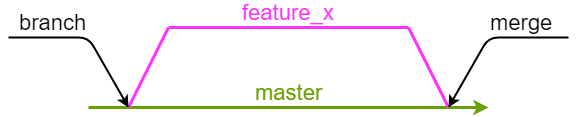
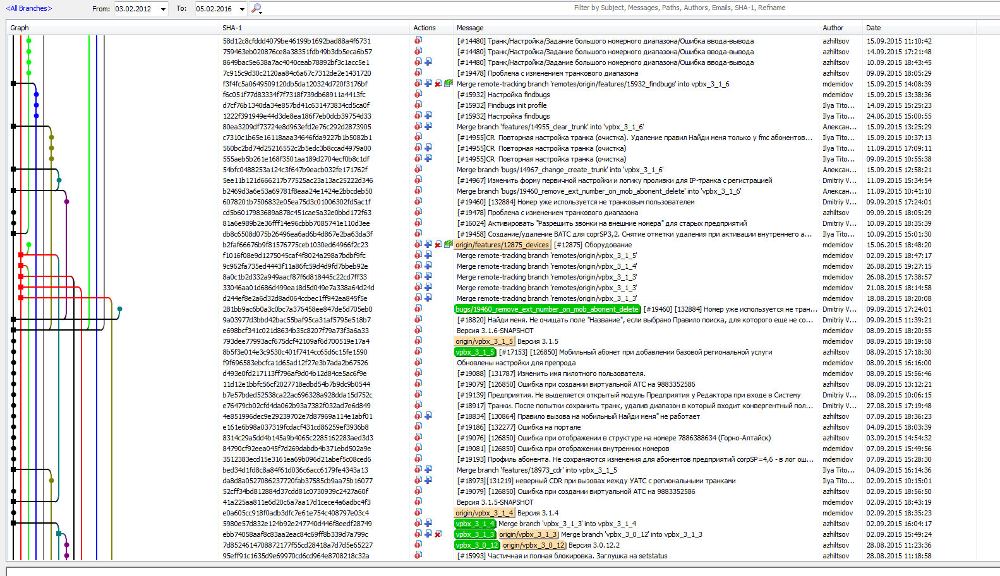

Системы управления версиями исходных кодов и начала Git
Маличенко Сергей
Определения
Система управления версиями (Version Control System, VCS) – система, которая сохраняет изменения файла или файлов во времени. Система управления версиями позволяет хранить несколько версий одного и того же документа, при необходимости возвращаться к более ранним версиям, определять, кто и когда сделал то или иное изменение, и многое другое.Commit ("Коммит") – структура данных, хранящая некоторое фиксированное состояние файлов и дополнительные сведения: дата, автор, email автора, сообщение и идентификатор коммита, указатели на родителей.
Что собираемся хранить? Исходный код, т.е. файлы и папки.
Типы и примеры VCS
Централизованные (CVS, Subversion)

Распределенные (Git, Mercurial, Bazaar)

Git
Первая версия вышла 7 апреля 2005 годаТекущая версия 2.13.1 (5 июня 2017)
Отличительные черты:
- Высокая производительность
- Значительная гибкость использования
- Полностью распределенный
- Интеграция со всем, чем можно (Android Studio)
- OpenSource
Инициализация репозитория
Новый репозиторий
Чтобы создать новый репозиторий, нужно создать новую папку и выполнить в ней
git init
Существующий репозиторий
Чтобы получить копию локального репозитория:
git clone /path/to/repository
Чтобы получить копию удаленного репозитория:
git clone username@host:/path/to/repository
Workflow
.git директория – база данных и метаданные. Создается или клонируется автоматически.Рабочая директория – все файлы, содержащиеся в текущей версии проекта.
Staging директория (индекс) – содержит изменения для следующего коммита.

add & commit
Создаем новые файлы, либо изменяем существующие. После добавляем их в индекс:
git add <filename>
git add *
Делаем коммит:
Теперь ваши изменения есть в локальной базе данных.
git commit -m "Commit message"
Ветки
Ветки используются для разработки "фич", изолированных друг от друга
Master является веткой по умолчанию
Чтобы создать новую ветку и сразу переключиться на нее:
git checkout -b feature_x
Чтобы переключиться обратно на master:
Чтобы "влить" изменения из feature_x в master:
git checkout master
git merge feature_x

Ветки

Синхронизация
Отправка
Ветка не доступна для других юзеров, пока вы не сделаете ее push:
Если вы не клонировали репозиторий, и хотите соединить ваш локальный репозиторий с удаленным:
Теперь можно делать push
Ветка не доступна для других юзеров, пока вы не сделаете ее push:
git push origin <branch_name>
git remote add origin <server_url>
Получение
Чтобы получить изменения других разработчиков в ветке:
Разрешить конфликты если есть
Чтобы получить изменения других разработчиков в ветке:
git fetch origin
git merge <branch_name>
Или:
git pull [--rebase] origin <branch_name>
GUI
Узнать больше
Почитать
- git help
- Официальный сайт
- ProGIT книга
- Краткий гайд